In this tutorial we explore a published learning to hash model and compare its performance on image retrieval to Locality Sensitive Hashing (LSH).
Specifically we study the Graph Regularised Hashing (GRH) model of Moran and Lavrenko, a simple but empirically effective supervised hashing model for learning to hash. The model was subsquently extended to cross-modal hashing.
The original Matlab code supplied by Moran and Lavrenko can be found here. We will code up a version of the model in Python 3. This tutorial will train the model on the CIFAR-10 dataset and benchmark the retrieval effectiveness against LSH (i.e. Gaussian sign random projections) using the precision at 10 metric and semantic nearest neighbour evaluation.
First step is to instantiate a virtual environment for Python3:
python3 -m venv ./hashing_tutorial
source hashing_tutorial/bin/activate
pip3 install -r requirements.txt
We retrieve and pre-process the CIFAR-10 dataset as follows:
import scipy.io
import os
import requests
url='https://www.dropbox.com/s/875u1rkva9iffpj/Gist512CIFAR10.mat?dl=1'
response = requests.get(url)
with open(os.path.join("./", "Gist512CIFAR10.mat"), 'wb') as f:
f.write(response.content)
mat = scipy.io.loadmat('./Gist512CIFAR10.mat')
data = mat['X']
data = Normalizer(norm='l2').fit_transform(data)
data = data-data.mean(axis=0)
classes = mat['X_class']
The above code should download and save the CIFAR-10 dataset pre-processed into GIST features to the current directory. It is important to L2 normalise and mean center the data before we index.
If you would like to skip ahead, you can run the entire code as follows:
python3 hashing_tutorial.py
This code will download the CIFAR-10 dataset, train the GRH model and evaluate the hashing performance on the CIFAR-10 image dataset.
We will now generate 16 random hyperplanes (= 16 bit hashcode) and project one image onto these hyperplanes, generating the sign random projection LSH hashcode:
import numpy as np
num_classes = 10
n_vectors = 32
dim = 512
np.random.seed(0)
random_vectors = np.random.randn(dim, n_vectors)
print(random_vectors)
print('dimension:', data[0,:].shape)
bin_indices_bits = data[0,:].dot(random_vectors) >= 0
print(bin_indices_bits)
# [False True False True False True False False False False True True True False False False]
The last line of code prints out the hashcode assigned to this image. Images with the exact same hashcode will collide in the same hashtable bucket. We would like these colliding images to be semantically similar i.e. have the same class label.
We now convert the boolean representation above into an integer representation that will denote the bin indices:
# https://wiki.python.org/moin/BitwiseOperators
# x << y is the same as multiplying x by 2 ** y
powers_of_two = 1 << np.arange(n_vectors - 1, -1, step=-1)
print(powers_of_two)
# [32768 16384 8192 4096 2048 1024 512 256 128 64 32 16 8 4 2 1]
bin_indices = bin_indices_bits.dot(powers_of_two)
print(bin_indices)
# 21560
The example image will hash into hashtable bucket with index 21560. Now we will hash the entire dataset using matrix operations:
bin_indices_bits = data.dot(random_vectors) >= 0
print(bin_indices_bits.shape)
bin_indices = bin_indices_bits.dot(powers_of_two)
bin_indices.shape
bin_indices now contains 60,000 bin indices, one for each of the 60,000 images in the CIFAR-10 dataset. We now insert these images into a hashtable and inspect the duplicates:
from collections import defaultdict
table = defaultdict(list)
for idx, bin_index in enumerate(bin_indices):
table[bin_index].append(idx)
for bucket,images in table.items():
if len(images)>1:
print(images)
The code above will print out the buckets of the hashtable with at least two images and the associated IDs (i.e. row numbers in the original .mat file) of the images in each bucket. The average number of colliding image in each bin is ~2 images, with a maximum of 68 colliding images. Next we will inspect some of the buckets to gain an understanding of the quality of the hashing with LSH:
# We take this bucket and inspect the images:
# [39378, 39502, 41761, 42070, 50364]
print(classes.shape)
print(classes[:,39378]) # 7
print(classes[:,39502]) # 8
print(classes[:,41761]) # 8
print(classes[:,42070]) # 4
print(classes[:,50364]) # 9
On this particular example we can see that LSH does fairly poorly, with two semantically related images (class 8 ship), colliding in the same bucket. We will inspect another bucket before moving on:
# We take this bucket and inspect the images:
# [42030, 42486, 43090, 47535, 50134, 50503]
print(classes.shape)
print(classes[:,42030]) # 4
print(classes[:,42486]) # 4
print(classes[:,43090]) # 4
print(classes[:,47535]) # 1
print(classes[:,50134]) # 1
print(classes[:,50503]) # 4
In this case we see that LSH performs very well, with the majority of the colliding images coming from the same class label (4, deer). We now quantitatively evaluate the retrieval performance of LSH in a more rigourous manner.
We now quantify the semantic retrieval effectieness of LSH more formally using the precision at 10 as the number of hashcode bits are varied. Precision at 10 measures how many of the 10 retrieved nearest neighbours for a query are of the same class as the query. Firstly we split the dataset up into a set of queries, a training dataset to learn any parameters and a held-out database that we perform retrieval:
from sklearn.model_selection import train_test_split
np.random.seed(0)
data_temp, data_query, labels_temp, labels_query = train_test_split(data, classes[0,:], test_size=0.002, random_state=42)
data_database, data_train, labels_database, labels_train = train_test_split(data_temp, labels_temp[:], test_size=0.02, random_state=42)
This code will give 120 random queries that we will use alongside the LSH search index to find nearest neighbours. The database consists of 58682 images, and the training dataset contains 1198 images.
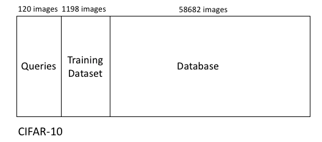
To prevent overfitting we maintain a held-out database that we perform retrieval against using the set of 120 queries. The training dataset is used to learn any parameters and hyperparameters required by the models.
We now index the database portion with LSH creating our hashtable:
bin_indices_bits = data_database.dot(random_vectors) >= 0
bin_indices = bin_indices_bits.dot(powers_of_two)
table = defaultdict(list)
for idx, bin_index in enumerate(bin_indices):
table[bin_index].append(idx)
To search for nearest neighbours we apply a Hamming radius based search:
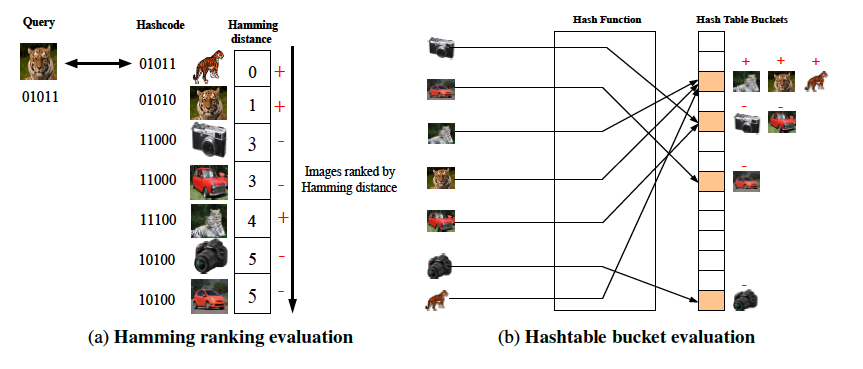
Hamming radius based search for a radius of zero is shown in Figure (b) in the above diagram (taken from the PhD thesis of Sean Moran).
In a nutshell this search methodology works by also looking in the collding bin and nearby bins that different from the current bin by a certain number of bits, up to a specific maximum radius. We can use the itertools combinations function to enumerate all the bins that differ from the current bin with respect to a certain number of bits, up to a maximum radius of 10 bits. As well as returning neighbours in the same bin, we also return neighbours from the nearby bins.
from itertools import combinations
from sklearn.metrics.pairwise import pairwise_distances
import pandas as pd
import time
max_search_radius=10
topn=10
precision_history = {i: [] for i in range(max_search_radius+1)}
time_history = {i: [] for i in range(max_search_radius+1)}
for query_image, query_label in zip(data_query,labels_query):
bin_index_bits = np.ravel(query_image.dot(random_vectors) >= 0)
candidate_set = set()
for search_radius in range(max_search_radius + 1):
start = time.time()
# Augment the candidate set with images from bins within the search radius
n_vectors = bin_index_bits.shape[0]
for different_bits in combinations(range(n_vectors), search_radius):
index = list(different_bits)
alternate_bits = bin_index_bits.copy()
alternate_bits[index] = np.logical_not(alternate_bits[index])
nearby_bin = alternate_bits.dot(powers_of_two)
if nearby_bin in table:
candidate_set.update(table[nearby_bin])
# sort candidates by their true distances from the query
candidate_list = list(candidate_set)
if candidate_list:
candidates = data_database[candidate_list[:]]
ground_truth = labels_database[candidate_list[:]]
distance = pairwise_distances(candidates, query_image.reshape(1,-1), metric='cosine').flatten()
distance_col = 'distance'
nearest_neighbors = pd.DataFrame({'id': candidate_list, 'class': ground_truth, distance_col: distance}).sort_values(distance_col).reset_index(drop=True)
candidate_set_labels = nearest_neighbors.sort_values(by=['distance'], ascending=True)['class'][:10]
precision = list(candidate_set_labels).count(query_label) / topn
precision_history[search_radius].append(precision)
end = time.time()
elapsed_time=end - start
print(elapsed_time)
time_history[search_radius].append(elapsed_time)
mean_time = [np.mean(time_history[i]) for i in range(len(time_history))]
print(mean_time)
mean_precision = [np.mean(precision_history[i]) for i in range(len(precision_history))]
print(mean_precision)
The above code will produce a mean precision@10 of 0.30 for a radius of 2. As we increase the Hamming radius we increase the quality of the retrieval, at the expense of checking many more candidate nearest neighbours. This means that, on average, given a list of 10 returned images, 30% of those will be relevant to the query when we use a Hamming radius of 2. We will show how this can be boosted to 0.40 mean precision@10 by learning the hashing hyperplanes, rather than generating the hyperplanes randomly (as per LSH).
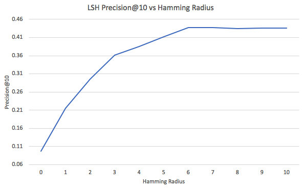
As the Hamming radius increases from 0 to 10 we start retrieving more and more images from the database in our candidate set, and this leads to a corresponding sharp increase in the query time which will approach a standard brute force search time (~53 seconds) when the returned candidate set equals the entire database.
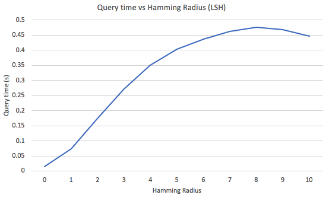
We now investigate how learning the hyperplanes (i.e. learning to hash) can afford a much higher level or retrieval effectiveness. To recap we will be developing the supervised learning to hash model Graph Regularised Hashing.
Our first step is to use the training dataset to construct an adjacency matrix that GRH will use as its supervisory signal for learning the hashing hyperplanes. If two images share the same class label they have adjacency_matrix[i,j]=1 and adjacency_matrix[i,j]=0 otherwise. In Python we can construct this adjacency matrix from the class label vector:
adjacency_matrix=np.equal.outer(labels_train, labels_train).astype(int)
row_sums = adjacency_matrix.sum(axis=1)
adjacency_matrix = adjacency_matrix / row_sums[:, np.newaxis]
We now implement the two-step Graph Regularised Hashing (GRH) model of Moran and Lavrenko, which is reminiscent of the expectation maximisation (EM) algorithm. The following slides are taken from the talk here.
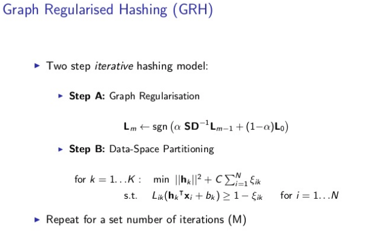
The first step is Graph Regularisation:
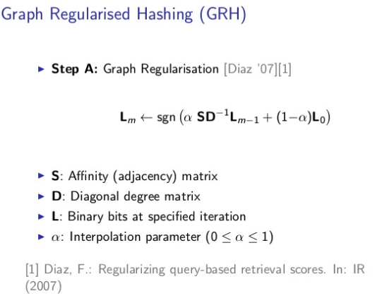
(The paper by Fernando Diaz - as referenced in the above slidedeck - is very much worth a read and can be found here.)
In the first step the adjacency matrix is matrix multiplied by the hashcodes of the training dataset images. This multiplication has the effect of adjusting the hashcodes of the training database images such that semantically similar images have their hashcodes made more similar to each other.
The second step is Data Space Partitioning:
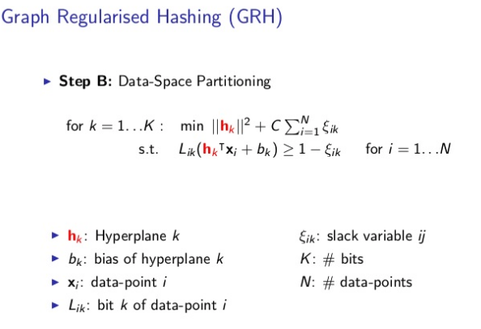
In the second step those refined hashcodes are used to update the hyperplanes: to do this an SVM is learnt per hash bit using the bits as targets. GRH takes the LSH hyperplanes in random_vector as an initialisation point and iteratively updates those hyperplanes so as to make them more effective for hashing. The entire GRH model is implemented below:
n_iter=2 # number of iterations of GRH
alpha=0.5 # how much to update the hashcodes based on the supervisory information
for i in range(0,n_iter):
bin_indices_bits = (data_train.dot(random_vectors) >= 0).astype(int)
bin_indices_bits[bin_indices_bits==0]=-1
bin_indices_bits_refined=np.matmul(adjacency_matrix,bin_indices_bits.astype(float))
bin_indices_bits_refined=(bin_indices_bits_refined >=0).astype(int)
bin_indices_bits_refined[bin_indices_bits_refined<=0]=-1
bin_indices_bits = (0.25*bin_indices_bits_refined.astype(float) + 0.75*bin_indices_bits.astype(float))
bin_indices_bits=(bin_indices_bits >=0).astype(int)
bin_indices_bits[bin_indices_bits<=0]=-1
grh_hyperplanes = random_vectors.copy()
for j in range(0,n_vectors):
if abs(sum(bin_indices_bits[:,j]))==data_train.shape[0]:
# In case all bits are the same we generate a new random vector
random_vector = np.random.randn(dim, 1)
grh_hyperplanes[:,j]=random_vector[:,0]
else:
hyperplane=svclassifier.fit(data_train, bin_indices_bits[:,j]).coef_
hyperplane=np.array(hyperplane)
grh_hyperplanes[:,j]=hyperplane
random_vectors = grh_hyperplanes.copy()
In the above code, we parametrise GRH with 2 iterations and an alpha of 0.25. The iterations parameter is the number of times we repeat the two steps of GRH i.e. hashcode refinement with the adjacency matrix followed by adjustment of the hyperplanes based on those updated hashcodes. After 2 iterations, the matrix random_vectors contains a set of hyperplanes that have been refined - that is made more effective for hashing-based nearest neighbour search - based on the supervisory information in the training dataset as encapsulated in the adjacency matrix. We can use these hyperplanes as in the code at the start of this tutorial to evaluate their effectiveness via a hashtable bucket-based evaluation at various Hamming radii.
We now illustate how GRH works on a toy image retrieval example. The following diagram illustrates the nearest neighbour relationships on the toy example: denoted by the nodes and edges (edges connect semantic nearest neighbours). The LSH generated hashcodes are show alongside each image.
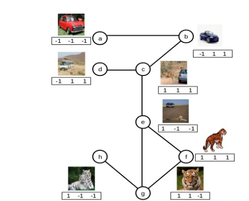
The diagram below illustrates how the adjacency matrix is used to update the hashcodes, with the first bit of image C flipping to a -1 to be more similar to the images above and to the left of it. In contrast, image E has its second bit flipped to become more similar to the hashcodes from the images below and to the left of it.
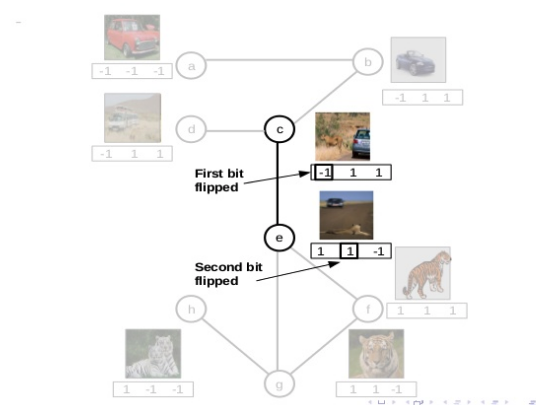
A hyperplane is then learnt for the first bit by using the first bit of every image’s hashcode as the target. In this toy example (image below) a hyperplane partitions the data space horizontally, assigning images above the line a -1 in their first bit of their hashcode, and images below the line a 1 in their first bit of their hashcode.
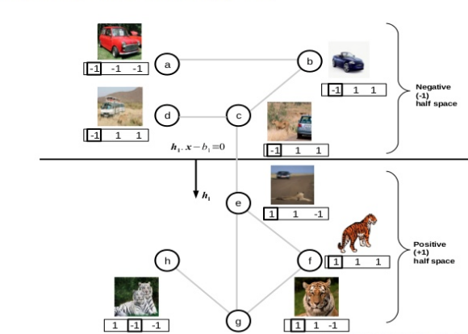
Now we have gained an understanding of how the GRH model works we will evaluate the GRH hashcodes using the same methodology as we did for LSH. We find an improved retrieval effectiveness, particularly at low Hamming radii:
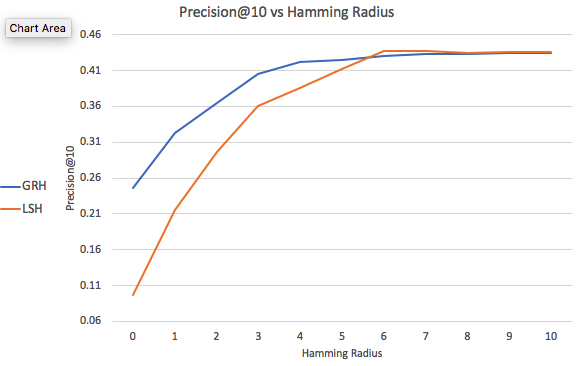
The benefits of GRH on this dataset an for a hashcode length of 16 bits can mostly be observed in the low Hamming radius regime (<=5). For example, at Hamming radius 0, GRH obtains ~0.25 mean precision@10, whereas LSH obtains ~0.1 mean precision@10. Query time for both methods are approximately similar (~0.5 seconds). The query time curve for GRH at increasing Hamming radii is shown below. As can be observed, for some Hamming radii, we pay at small price in terms of query time for the additional boost in effectiveness.
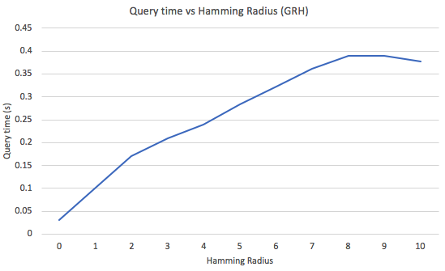
In this tutorial we use a Support Vector Machine (SVM) to learn the hyperplanes for GRH. We note that another benefit of GRH, aside from its simplicity and effectiveness, is that it is agnostic to the learning algorithm, and we can use a deep network if we wish to learn a more accurate data-space partitioning or a passive aggressive classifier if we desire a light-weight learning method that can be adapted online e.g. in a streaming scenario. Lastly, in this tutorial we explored a single hashtable implementation of LSH and GRH and increased the number of relevant items retrieved using multiple buckets via a multi-probing mechanism. Other implementations of LSH would forgo the multi-probing of buckets within the same hashtable, and instead use multiple independent hashtables to find more relevant items.
Any comments on this tutorial please contact the author Sean Moran. The code for the tutorial can be found here. The dependencies are located in requirements.txt file. Feel free to contact me with questions, suggestions or feedback. Copyright © Sean Moran 2020. All opinions are my own.
Acknowledgement: Parts of this tutorial were inspired by the text-based LSH tutorial here.